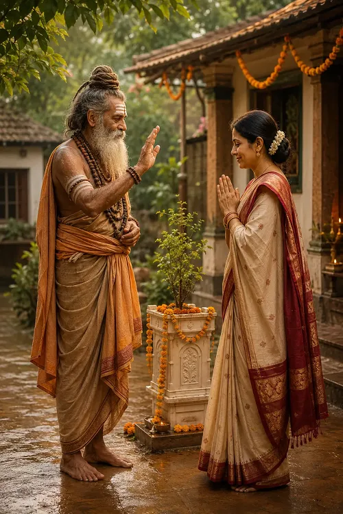

The Inner Meaning of Maha Shivaratri
মহাশিবরাত্রির অন্তর্নিহিত অর্থ
A night of wakefulness that invites devotees to become inwardly alert through fasting, mantra, prayer and remembrance of Shiva.
A Temple Built Through Faith, Devotion & Divine Grace
🕉️ Explore the sacred teachings, prayers, mantras and divine names of Mahadev.
Choose a path of knowledge, prayer, remembrance, service or divine darshan.
Explore Mahadev's divine forms, sacred symbols and eternal meaning.
Explore Shiva → শিব পরিচয় → 02Enter the bilingual library of Samhitas, Khandas and sacred chapters.
Open the Scripture → ধর্মগ্রন্থ খুলুন → 03Offer forty devotional verses at the sacred feet of Mahadev.
Begin Recitation → পাঠ শুরু করুন → 04Remember Lord Shiva through His sacred names and attributes.
Chant the Names → নাম জপ করুন → 05Support daily worship, temple care and future devotional work.
Learn About Seva → সেবা সম্পর্কে জানুন → 06See temple photos, videos and memorable devotional moments.
Open the Gallery → গ্যালারি খুলুন →Offer your prayers to Mahadev and seek divine blessings.
"Where there is unwavering faith, there is the grace of Mahadev."
Bholenath Dham is a sacred Shiva Temple located at near Durga Mandir, Digha, Chandpara, Dhakuria-Ramchandrapur Road, North 24 Parganas, West Bengal - 743245. The temple was inaugurated on 15 February 2026 and remains open 24 hours a day for devotees.


In the sacred month of Shravan in 2022, a humble family was passing through one of the most challenging periods of their lives. Financial difficulties had become a daily reality, and the future seemed uncertain.
One day, during this difficult time, an Aghori Baba arrived at their home seeking alms. Though the family had very little, Smt. Puthul Devi offered what she could with devotion and respect. Seeing her sincerity and kindness, the saint blessed her and spoke words that would forever change their lives. The Aghori Baba said:
"I have come from Mahakal. Very soon, Lord Shiva's blessings will transform your life. But remember one thing—if prosperity comes to you, will you build a home for me?"
Without hesitation, Puthul folded her hands and replied:
"If Lord Shiva blesses us as you say, I promise that I will build a temple dedicated to Mahadev."
The saint smiled, blessed the family once again, and departed.
As time passed, remarkable changes began to unfold. Within the following months, opportunities appeared, hardships gradually disappeared, and by the end of 2023, the family's circumstances had improved beyond what they had imagined. Yet amid this newfound prosperity, Puthul never forgot the promise she had made before Mahakal.
After months of dedication and sacred preparation, Bholenath Dham was completed and officially inaugurated on 15 February 2026.
Today, this temple stands not merely as a structure of stone and marble, but as a living testimony to:
Every devotee who visits Bholenath Dham becomes part of this sacred journey of devotion, faith, and fulfillment.
There is no single perfect way to pray. These simple steps can help every visitor enter respectfully and turn temple darshan into a meaningful inward experience.
Pause for a few breaths and leave haste, arguments and distraction outside as far as possible.
Remove footwear, keep the surroundings clean, speak gently and respect the prayers of others.
A sincere namaskar, water, flowers or a silent prayer can become a complete offering to Mahadev.
Chant Om Namah Shivaya slowly, recite Shiva Chalisa or remember one of Shiva's sacred names.
If circumstances permit, spend a few quiet minutes after darshan and carry one clear prayer with you.
Complete the visit through kindness, self-restraint or seva in your daily life.
Join us in celebrating the sacred festivals dedicated to Lord Shiva and Sanatan Dharma.
A night of devotion, Rudrabhishek, prayers and chanting of Om Namah Shivaya.
View Celebration Details → উদযাপনের বিস্তারিত →Special Jalabhishek and prayers offered to Lord Shiva throughout the holy month.
A day dedicated to honoring spiritual teachers and seeking divine blessings.
A highly auspicious occasion for worshipping Lord Shiva and receiving blessings.
A night of wakefulness that invites devotees to become inwardly alert through fasting, mantra, prayer and remembrance of Shiva.
Jalabhishek, mantra and restraint teach that spiritual depth grows through simple and consistent devotion.
Twilight worship offers a regular moment to review one's actions, seek forgiveness and renew a dharmic life.
May the blessings of Mahadev illuminate every devotee's life.


Carry the peace of temple darshan into every day through remembrance, sacred reading and compassionate action.
Where there is faith, there is the grace of Mahadev.
Begin or end the day with a few attentive repetitions of Om Namah Shivaya.
Read a passage from Shiva Purana and reflect on one teaching at a time.
Let one act of patience, kindness or seva become your daily offering to Mahadev.
"Chanting the name of Mahadev purifies the mind and awakens the soul."
🔱 Har Har Mahadev 🔱The most sacred mantra dedicated to Lord Shiva. It invokes peace, devotion, inner strength, and spiritual awakening.
Known as the Great Death-Conquering Mantra, it is chanted for protection, healing, good health, and divine blessings.
🙏 Every devotee is welcomed with the blessings of Mahadev.
Open 24 Hours
Devotees are welcome at any time for prayer and दर्शन.
Near Durga Mandir, Digha, Chandpara
Dhakuria-Ramchandrapur Road
24 Parganas North
West Bengal – 743245
May Lord Shiva bless every devotee with peace, strength, wisdom, and prosperity.
Helpful information for devotees planning a visit or beginning their spiritual reading.
Near Durga Mandir in Digha, Chandpara, on Dhakuria-Ramchandrapur Road, North 24 Parganas, West Bengal – 743245.
Bholenath Dham is approximately 2 to 3.5 km from Chandpara Railway Station. Devotees arriving by train on the Sealdah–Bangaon line can easily catch a local toto or auto-rickshaw from the station. The ride takes about 8 to 12 minutes along the Dhakuria–Ramchandrapur Road.
Yes, dedicated parking spaces are available at the temple complex for devotees driving from Gaighata, Bongaon, and surrounding regions. Whether you arrive by car or two-wheeler for daily darshan or a special Rudrabhishek puja, you can park your vehicle safely near the venue.
Yes, the temple is very easy to reach from Jessore Road (NH 112). If you are driving along the highway, simply take the turn at the Chandpara Bazar intersection onto the Dhakuria–Ramchandrapur Road. The temple is located just a few minutes down this road, right next to the Durga Mandir in Digha.
No, entry to the temple is completely free, and no pre-booking is required for regular Darshan. The temple operates on a 24-hour structure to welcome all devotees seamlessly. If you wish to perform a special Rudrabhishek Puja or participate in specific Seva activities, you can coordinate directly with the temple management upon arrival near the Digha Durga Mandir premises.
Bholenath Dham is open 24 hours a day, seven days a week for prayer and darshan.
The temple was inaugurated on 15 February 2026.
Yes. The website contains an English and Bengali Shiva Purana library organized by Samhita, Khanda and chapter.
Explore Shiva Purana, Shiva Chalisa, 108 Names, mantras, sacred teachings, temple media and seva information.
Visit the Seva page to learn about supporting daily worship, temple activities and future development.
Welcome to Bholenath Dham. 🔔 New videos and photos from Bholenath Dham are now available.
📸 Explore Photos & Videos